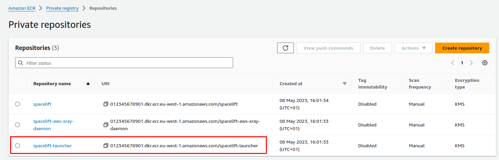

Kubernetes Workers»
We provide a Kubernetes operator for managing Spacelift worker pools. The operator also works on OpenShift. This operator allows you to define WorkerPool resources in your cluster, and allows you to scale these pools up and down using standard Kubernetes functionality.
Info
Previously we provided a Helm chart for deploying worker pools to Kubernetes using Docker-in-Docker. This approach is no-longer recommended, and you should use the Kubernetes operator instead. Please see the section on migrating from Docker-in-Docker for more information.
A WorkerPool defines the number of Workers registered with Spacelift via the poolSize parameter. The Spacelift operator will automatically create and register a number of Worker resources in Kubernetes depending on your poolSize.
Info
Worker resources do not use up any cluster resources other than an entry in the Kubernetes API when they are idle. Pods are created on demand for Workers when scheduling messages are received from Spacelift. This means that in an idle state no additional resources are being used in your cluster other than what is required to run the controller component of the Spacelift operator.
Kubernetes version compatibility»
The spacelift controller is compatible with Kubernetes version v1.26+. The controller may also work with older versions, but we do not guarantee and provide support for unmaintained Kubernetes versions.
Installation»
Controller setup»
To install the worker pool controller along with its CRDs, run the following command:
1 | |
Warning
It is important to use the --server-side flag here. The reason is that our CRD definitions
contains long field descriptions. This causes the apply to fail, as detailed in this kubebuilder issue,
because kubernetes sets the kubectl.kubernetes.io/last-applied-configuration annotation, and the size of the CRD exceed
the maximum size of an annotation field.
Tip
You can download the manifests yourself from https://downloads.spacelift.io/kube-workerpool-controller/latest/manifests.yaml if you would like to inspect them or alter the Deployment configuration for the controller.
You can install the controller using the official spacelift-workerpool-controller Helm chart.
1 2 3 | |
You can open values.yaml from the helm chart repo for more customization options.
Warning
Helm has no support at this time for upgrading or deleting crd's so this would need to be done manually through kubernetes. The latest CRD's can be found in this link.
Prometheus metrics
The controller also has a subchart for our prometheus-exporter project that exposes metrics in OpenMetrics spec.
This is useful for scaling workers based on queue length in spacelift (spacelift_worker_pool_runs_pending metric).
To install the controller with the prometheus-exporter subchart, use the following command:
1 2 3 4 5 | |
values.yaml file for the subchart.
OpenShift»
If you are using OpenShift, additional steps are required to allow the controller to run properly.
-
Get the controllers service account name:
1kubectl get serviceaccounts -n {namespace_of_controller} -
Add the
anyuidsecurity context constraint to the service account:1oc adm policy add-scc-to-user anyuid -z {service_account_name} -n {namespace_of_controller} --as system:admin -
Create a Spacelift Admin role in the namespace where your worker pods will run (note this may be different from the namespace you installed the controller into):
1oc create role spacelift-admin --verb='*' --resource='*' -n {namespace_of_worker_pods} -
Bind the role to the controller's service account:
1oc create rolebinding spacelift-admin-binding --role=spacelift-admin --serviceaccount={namespace_of_controller}:{service_account_name} -n {namespace_of_worker_pods} -
Ensure the controller can indeed use the kubernetes api in the namespace where your worker pods will run:
1oc auth can-i '*' '*' --as=system:serviceaccount:{namespace_of_controller}:{service_account_name} -n {namespace_of_worker_pods}Note: this should return
yesif everything is set up correctly. -
Restart the worker controller pod to make sure it picks up the new permissions.
1kubectl rollout restart deployments -n {namespace_of_controller}
Create a Secret»
Next, create a Secret containing the private key and token for your worker pool, generated earlier in this guide.
First, export the token and private key as base64 encoded strings:
Mac»
1 2 | |
Linux»
1 2 | |
Then, create the secret.
1 2 3 4 5 6 7 8 9 10 | |
Create a WorkerPool»
Finally, create a WorkerPool resource using the following command:
1 2 3 4 5 6 7 8 9 10 11 12 13 14 15 16 | |
Grant access to the Launcher image»
During your Self-Hosted installation process, the Spacelift launcher image should be uploaded to a container repository. For instance, it could be Artifact Registry in GCP or ECR in AWS.

The launcher image is used during runs on Kubernetes workers to prepare the workspace for the run, and the Kubernetes cluster that you want to run your workers on needs to be able to pull that image for runs to succeed.
Some options for this include:
- If your Kubernetes cluster is running inside AWS, you can add a policy to your ECR to allow pulls from your cluster nodes. Alternatively, you can use one of the methods listed in the ECR private registry authentication guide.
- You can copy the image to a registry accessible by your cluster, and then set the
spec.pod.launcherImageconfiguration option on yourWorkerPoolresource to point at it.
Info
You can deploy the controller globally (the default option) to monitor all namespaces, allowing worker pools in multiple namespaces, or restrict it to specific namespaces using the namespaces option in the Helm chart values. The namespace of the controller and workers themselves doesn’t impact functionality.
That's it - the workers in your pool should connect to Spacelift, and you should be able to trigger runs!
Upgrade»
Usually, there is nothing special to do for upgrading the controller.
Some release of the controller may include backward compatibility breaks, you can find below instructions about how to upgrade for those specials versions.
Upgrading to controller v0.0.17 - or Helm chart v0.33.0»
This release changes the way the controller exposes metrics by removing usage of the kube-rbac-proxy container.
You can find more context about the reason for this change in the Kubebuilder repository.
If the controller was installed using compiled Kubernetes manifest using kubectl apply -f ...,
you should first uninstall the current release before deploying the new one.
Warning
The command below will remove CRDs and thus also remove your WorkerPool from the cluster.
Before running it, make sure that you'll be able to recreate them after the upgrade.
1 2 3 4 5 | |
Then you can install the new controller version with the following command.
1 | |
CRDs have been updated in this new version, and Helm does not perform CRDs update for us. So before upgrading to the latest version of the chart, you should execute the following commands to upgrade CRDs.
1 2 | |
Once done, you can upgrade the chart like usual with helm upgrade.
Run Containers»
When a run assigned to a Kubernetes worker is scheduled by Spacelift, the worker pool controller creates a new Pod to process the run. This Pod consists of the following containers:
- An init container called
init, responsible for populating the workspace for the run. - A
launcher-grpccontainer that runs a gRPC server used by the worker for certain tasks like uploading the workspace between run stages, and notifying the worker when a user has requested that the run be stopped. - A
workercontainer that executes your run.
The init and launcher-grpc containers use the public.ecr.aws/spacelift/launcher:<version> container image published by Spacelift. By default, the Spacelift backend sends the correct value for <version> through to the controller for each run, guaranteeing that the run is pinned to a specific image version that is compatible with the Spacelift backend.
The worker container uses the runner image specified by your Spacelift stack.
Warning
You can use the spec.pod.launcherImage configuration option to pin the init and launcher-grpc containers to a specific version, but we do not typically recommend doing this because it means that your run Pods could become incompatible with the Spacelift backend as new versions are released.
Resource Usage»
Kubernetes Controller»
During normal operations the worker pool controller CPU and memory usage should be fairly stable. The main operation that can be resource intensive is scaling out a worker pool. Scaling up involves generating an RSA keypair for each worker, and is CPU-bound. If you notice performance issues when scaling out, it's worth giving the controller more CPU.
Run Pods»
Resource requests and limits for the init, launcher-grpc and worker containers can be set via your WorkerPool definitions, like in the following example:
1 2 3 4 5 6 7 8 9 10 11 12 13 14 15 16 17 18 19 20 21 22 23 24 25 26 27 28 29 30 31 32 33 34 35 36 37 38 39 40 41 42 43 44 45 46 47 48 | |
You can use the values above as a baseline to get started, but the exact values you need for your pool will depend on your individual circumstances. You should use monitoring tools to adjust these to values that make sense.
Warning
In general, we don't suggest setting very low CPU or memory limits for the init, grpc or worker containers since doing so could affect the performance of runs, or even cause runs to fail if they are set too low. And in particular, the worker container resource usage will very much depend on your workloads. For example stacks with large numbers of Terraform resources may use more memory than smaller stacks.
Volumes»
There are two volumes that are always attached to your run Pods:
- The workspace volume.
- The binaries cache volume.
Both of these volumes default to using emptyDir storage with no size limit. Spacelift workers will function correctly without using a custom configuration for these volumes, but there may be situations where you wish to change this default, for example:
- To prevent Kubernetes evicting your run Pods due to disk pressure (and therefore causing runs to fail).
- To support caching tool binaries (for example Terraform or OpenTofu) between runs.
Workspace Volume»
The workspace volume is used to store the temporary workspace data needed for processing a run. This includes metadata about the run, along with your source code. The workspace volume does not need to be shared or persisted between runs, and for that reason we recommend using an Ephemeral Volume so that the volume is bound to the lifetime of the run, and will be destroyed when the run Pod is deleted.
The workspace volume can be configured via the spec.pod.workspaceVolume property, which accepts a standard Kubernetes volume definition. Here's an example of using an ephemeral AWS GP2 volume for storage:
1 2 3 4 5 6 7 8 9 10 11 12 13 14 15 16 17 18 19 20 21 22 23 24 25 26 27 28 29 30 31 32 33 34 | |
Binaries Cache Volume»
The binaries cache volume is used to cache binaries (e.g. terraform and kubectl) across multiple runs. You can use an ephemeral volume for the binaries cache like with the workspace volume, but doing so will not result in any caching benefits. To be able to share the binaries cache with multiple run pods, you need to use a volume type that supports ReadWriteMany, for example AWS EFS.
To configure the binaries cache volume, you can use exactly the same approach as with the workspace volume, the only difference is that you should use the spec.pod.binariesCacheVolume property instead of spec.pod.workspaceVolume.
Custom Volumes»
See the section on configuration for more details on how to configure these two volumes along with any additional volumes you require.
Configuration»
The following example shows all the configurable options for a WorkerPool:
1 2 3 4 5 6 7 8 9 10 11 12 13 14 15 16 17 18 19 20 21 22 23 24 25 26 27 28 29 30 31 32 33 34 35 36 37 38 39 40 41 42 43 44 45 46 47 48 49 50 51 52 53 54 55 56 57 58 59 60 61 62 63 64 65 66 67 68 69 70 71 72 73 74 75 76 77 78 79 80 81 82 83 84 85 86 87 88 89 90 91 92 93 94 95 96 97 98 99 100 101 102 103 104 105 106 107 108 109 110 111 112 113 114 115 116 117 118 119 120 121 122 123 124 125 126 127 128 129 130 131 132 133 134 135 136 137 138 139 140 141 142 143 144 145 146 147 148 149 150 151 152 153 154 155 156 157 158 159 160 161 162 163 164 165 166 167 168 169 170 171 172 173 174 175 176 177 178 179 180 181 182 183 184 185 186 187 188 189 190 191 192 193 194 195 196 197 198 199 | |
Pod History Management»
The Kubernetes operator provides flexible pod history management to control how long completed run pods are retained. This allows you to balance between debugging capabilities and resource usage.
Overview»
The pod history management system supports both count-based and time-based cleanup strategies that work together:
- Count-based limits: Control how many completed pods to keep per worker
- Time-based cleanup (TTL): Automatically remove pods after a specified duration
- Combined strategy: Pods are removed when they exceed either the count limit or the time limit
Default Behavior»
- Successful pods: Removed immediately (limit: 0)
- Failed pods: Keep 5 most recent (limit: 5)
- Time limits: No automatic TTL cleanup (unless explicitly configured)
Configuration Options»
Count-Based Limits»
1 2 3 4 5 6 | |
Time-Based Cleanup (TTL)»
1 2 3 4 5 6 | |
Special Modes»
Delete-All Mode: Set limit to 0 to remove all pods immediately
1 2 3 | |
TTL-Only Mode: Set TTL without limit for time-based cleanup only
1 2 3 4 | |
Behavior Details»
- Pod selection: Uses creation time for consistent ordering (oldest removed first)
- Running pods: Never affected by cleanup, only applies to completed pods
- WorkerPool scope: Cleanup is managed centrally at the WorkerPool level across all workers in the pool
- Deletion safety: Pods already being deleted are excluded from counts
Migration from keepSuccessfulPods
The keepSuccessfulPods field has been deprecated since controller version v0.0.25 and Helm chart version 0.46.0, and has been removed in favor of the new pod history management system. If you previously used keepSuccessfulPods: true, set successfulPodsHistoryLimit to a positive value instead.
Configure a docker daemon as a sidecar container»
If for some reason you need to have a docker daemon running as a sidecar, you can follow the example below.
1 2 3 4 5 6 7 8 9 10 11 12 13 14 15 16 17 18 19 20 21 22 | |
Timeouts»
There are two types of timeouts that you can set
- The run timeout: this causes the run to fail if its duration exceeds a defined duration.
- The log output timeout: this causes the run to fail if no logs has been generated for a defined duration.
To configure the run timeout you need to configure two items - the activeDeadlineSeconds for the Pod, as well as the SPACELIFT_LAUNCHER_RUN_TIMEOUT for the worker container:
1 2 3 4 5 6 7 8 9 10 11 | |
To configure the logs timeout you just need to add a single environment variable to the worker container:
1 2 3 4 5 6 7 8 9 10 | |
Network Configuration»
Your cluster configuration needs to be set up to allow the controller and the scheduled pods to reach the internet. This is required to listen for new jobs from the Spacelift backend and report back status and run logs.
You can find the necessary endpoints to allow in the Network Security section.
Initialization Policies»
Using an initialization policy is simple and requires three steps:
- Create a
ConfigMapcontaining your policy. - Attach the
ConfigMapas a volume in thepodspecification for your pool. - Add an environment variable to the init container, telling it where to read the policy from.
First, create your policy:
1 2 3 4 5 6 7 8 9 10 11 | |
Next, create a WorkerPool definition, configuring the ConfigMap as a volume, and setting the custom env var:
1 2 3 4 5 6 7 8 9 10 11 12 13 14 15 16 17 18 19 20 21 22 23 24 25 26 27 28 29 30 31 32 | |
Using VCS Agents with Kubernetes Workers»
Using VCS Agents with Kubernetes workers is simple, and uses exactly the same approach outlined in the VCS Agents section. To configure your VCS Agent environment variables in a Kubernetes WorkerPool, add them to the spec.pod.initContainer.env section, like in the following example:
1 2 3 4 5 6 7 8 9 10 11 12 13 14 15 16 17 18 19 20 21 | |
Controller metrics»
The workerpool controller does not expose any metrics by default.
You can set --metrics-bind-address=:8443 flag to enable them and activate the Prometheus endpoint.
By default, the controller exposes metrics using HTTPS and a self-signed certificate.
This endpoint is also protected using RBAC. If you use the helm chart to deploy the controller, you can use the built-in metrics reader role to grant access.
You may also want to use a valid certificate for production workloads. You can mount your cert in the container to the following paths:
1 2 | |
It's also possible to fully disable TLS on the metrics endpoint and ask the controller to export metrics using http. You need to set --metrics-secure=false flag for that.
More information about metrics authentication and TLS config can be found on the kubebuilder docs.
More information about exposed metrics can be found by scrapping the metrics endpoint, see and example below
1 2 3 4 5 6 7 8 9 10 11 12 13 14 15 16 17 18 19 | |
Helm»
If you are using our Helm chart to deploy the controller, you can configure metrics by switching some boolean flags in values.yml.
You can check the links in the comments below about how to secure your metrics endpoint.
1 2 3 4 5 6 7 8 9 10 11 12 | |
Custom binaries path»
Kubernetes workers download the spacelift-worker binary, along with any tools needed for your runs and mount them into a directory called /opt/spacelift/binaries in the worker. To ensure that these tools are used, this directory is added to the start of the worker's path.
In some situations you may wish to use your own version of tools that are bundled with the runner image used for your stack. To support this, we provide a spec.pod.customBinariesPath option to allow you to customize this.
The following example shows how to configure this:
1 2 3 4 5 6 7 8 9 10 11 12 13 14 15 16 | |
Autoscaling»
Careful consideration should be given when scheduling the controller in the cluster. If the worker pool controller is evicted due to autoscaling or other reasons, it may miss MQTT messages and cause temporary run failures.
Therefore, it is strongly recommended to deploy the controller on nodes with high stability and availability.
EKS»
For EKS Auto cluster you can set the following Karpenter annotation on the controller pod.
1 | |
1 | |
For Standard clusters:
1 | |
1 | |
GKE»
For autopilot cluster you can set the following annotation on the controller pod.
1 2 3 | |
1 | |
For Standard clusters:
1 | |
1 | |
AKS»
For Azure cluster you can set the following annotation on the controller pod.
1 | |
1 | |
FIPS»
With Go 1.24, the Go runtime has added support for FIPS mode. This allows you to run your Spacelift workerpool-controller in a FIPS 140-3-compliant manner.
Note
Note that the above Go documentation mentions that FIPS mode is best effort based and doesn't guarantee compliance with all requirements.
If you'd like to have the workerpool-controller run in FIPS mode, turn the controllerManager.enforceFips140 flag to true in the Helm chart values. We introduced this in the v0.42.0 release of the Helm chart.
You can set this in your values.yaml file like so:
1 2 | |
Or pass it as a parameter: --set controllerManager.enforceFips140=true.
When deployed without helm, you'll need to set the GODEBUG=fips140=only environment variable manually on the controller container. The command to do this is:
1 2 3 4 5 | |
During the controller's startup, you should see the FIPS 140 mode {"enabled": true} message in the logs.
Note
This will only make the controller run in FIPS mode. The Spacelift worker pods are not affected by this setting - they are not compliant with FIPS 140-3 yet.
Scaling a pool»
To scale your WorkerPool, you can either edit the resource in Kubernetes, or use the kubectl scale command:
1 | |
Billing for Kubernetes Workers»
Kubernetes workers are billed based on the number of provisioned workers that you have, exactly the same as for any of our other ways of running workers. What this means in practice is that you will be billed based on the number of workers defined by the poolSize of your WorkerPool, even when those workers are idle and not processing any runs.
Migrating from Docker-in-Docker»
If you currently use our Docker-in-Docker Helm chart to run your worker pools, we recommend that you switch to our worker pool operator. For full details of how to install the operator and setup a worker pool, please see the installation section.
The rest of this section provides useful information to be aware of when switching over from the Docker-in-Docker approach to the operator.
Why migrate»
There are a number of improvements with the Kubernetes operator over the previous Docker-in-Docker approach, including:
- The operator does not require privileged pods unlike the Docker-in-Docker approach.
- The operator creates standard Kubernetes pods to handle runs. This provides advantages including Kubernetes being aware of the run workloads that are executing as well as the ability to use built-in Kubernetes functionality like service accounts and affinity.
- The operator only creates pods when runs are scheduled. This means that while your workers are idle, they are not running pods that are using up resources in your cluster.
- The operator can safely handle scaling down the number of workers in a pool while making sure that in-progress runs are not killed.
Deploying workers»
One major difference between the Docker-in-Docker Helm chart and the new operator is that the new chart only deploys the operator, and not any workers. To deploy workers you need to create WorkerPool resources after the operator has been deployed. See the section on creating a worker pool for more details.
Testing both alongside each other»
You can run both the new operator as well as your existing Docker-in-Docker workers. In fact you can even connect both to the same Spacelift worker pool. This allows you to test the operator to make sure everything is working before switching over.
Customizing timeouts»
If you are currently using SPACELIFT_LAUNCHER_RUN_TIMEOUT or SPACELIFT_LAUNCHER_LOGS_TIMEOUT, please see the section on timeouts to find out how to achieve this with the operator.
Storage configuration»
If you are using custom storage volumes, you can configure these via the spec.pod section of the WorkerPool resource. Please see the section on volumes for more information.
Pool size»
In the Docker-in-Docker approach, the number of workers is controlled by the replicaCount value of the Chart which controls the number of replicas in the Deployment. In the operator approach, the pool size is configured by the spec.poolSize property. Please see the section on scaling for information about how to scale your pool up or down.
Troubleshooting»
Listing WorkerPools and Workers»
To list all of your WorkerPools, you can use the following command:
1 | |
To list all of your Workers, use the following command:
1 | |
To list the Workers for a specific pool, use the following command (replace <worker-pool-id> with the ID of the pool from Spacelift):
1 | |
Listing run pods»
When a run is scheduled, a new pod is created to process that run. It's important to note that a single worker can only process a single run at a time, making it easy to find pods by run or worker IDs.
To list the pod for a specific run, use the following command (replacing <run-id> with the ID of the run):
1 | |
To find the pod for a particular worker, use the following command (replacing <worker-id> with the ID of the worker):
1 | |
Workers not connecting to Spacelift»
If you have created a WorkerPool in Kubernetes but no workers have shown up in Spacelift, use kubectl get workerpools to view your pool:
1 2 3 | |
If the actual pool size for your pool is not populated, it typically indicates an issue with your pool credentials. The first thing to do is to use kubectl describe to inspect your pool and check for any events indicating errors:
1 2 3 4 5 6 7 8 9 10 11 12 13 14 15 | |
In the example above, we can see that the private key for the pool is invalid.
If the WorkerPool events don't provide any useful information, another option is to take a look at the logs for the controller pod using kubectl logs, for example:
1 | |
For example, if your token is invalid, you may find a log entry similar to the following:
1 | |
Another common reason that can cause workers to fail to connect with Spacelift is network or firewall rules blocking connections to AWS IoT Core. Please see our network security section for more details on the networking requirements for workers.
Run not starting»
If a run is scheduled to a worker but it gets stuck in the preparing phase for a long time, it may be caused by various issues like CPU or memory limits that are too low, or not being able to pull the stack's runner image. The best option in this scenario is to find the run pod and describe it to find out what's happening.
For example, in the following scenario, we can use kubectl get pods to discover that the run pod is stuck in ImagePullBackOff, meaning that it is unable to pull one of its container images:
1 2 3 | |
If we describe that pod, we can get more details about the failure:
1 2 3 4 5 6 7 8 9 10 11 12 13 14 15 16 17 18 19 20 21 22 23 24 25 26 27 | |
In this case, we can see that the problem is that the someone/non-existent-image:1234 container image cannot be pulled, meaning that the run can't start. In this situation the fix would be to add the correct authentication to allow your Kubernetes cluster to pull the image, or to adjust your stack settings to refer to the correct image if it is wrong.
Similarly, if you specify too low memory limits for one of the containers in the run pod Kubernetes may end up killing it. You can find this out in exactly the same way:
1 2 3 4 5 6 7 8 9 10 11 12 13 14 15 16 17 18 19 20 21 22 23 24 25 26 27 28 29 30 31 32 33 34 35 36 37 | |
Getting help with run issues»
If you're having trouble understanding why a run isn't starting, is failing, or is hanging, and want to reach out for support, please include the output of the following commands (replacing the relevant IDs/names as well as specifying the namespace of your worker pool):
kubectl get pods --namespace <worker-pool-namespace> -l "workers.spacelift.io/run-id=<run-id>"kubectl describe pods --namespace <worker-pool-namespace> -l "workers.spacelift.io/run-id=<run-id>"kubectl logs --namespace <worker-pool-namespace> -l "workers.spacelift.io/run-id=<run-id>" --all-containers --prefix --timestampskubectl events --namespace <worker-pool-namespace> workers/<worker-name> -o json
Please also include your controller logs from 10 minutes before the run started. You can do this using the --since-time flag, like in the following example:
kubectl logs -n spacelift-worker-controller-system spacelift-worker-controllercontroller-manager-6f974d9b6d-kx566 --since-time="2024-04-02T09:00:00Z" --all-containers --prefix --timestamps
Custom runner images»
Please note that if you are using a custom runner image for your stack, it must include a Spacelift user with a UID of 1983. If your image does not include this user, it can cause permission issues during runs, for example while trying to write out configuration files while preparing the run.
Please see our instructions on customizing the runner image for more information.
Networking issues caused by Pod identity»
When a run is assigned to a worker, the controller creates a new Pod to process that run. The Pod has labels indicating the worker and run ID, and looks something like this:
1 2 3 4 5 6 7 8 9 10 | |
Because the set of labels are unique for each run being processed, this can cause problems with systems like Cilium that use Pod labels to determine the identity of each Pod, leading to your runs having networking issues. If you are using a system like this, you may want to exclude the workers.spacelift.io/* labels from being used to determine network identity.